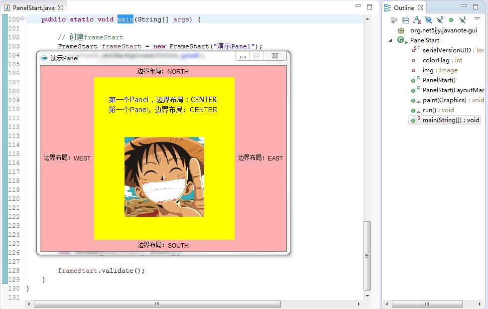

第四十九节 Panel （面板）
一、Panel 类
1、 核心 API
java.awt;
public class Panel extends Container implements Accessible {}
最简单的容器类
可以将其他组件（包括其他面板）放在面板内
默认使用FlowLayout布局管理器
构造方法
public Panel() 使用默认的布局管理器创建新面板 public Panel(LayoutManager layout) 创建具有指定布局管理器的新面板
2、 paint(g) 方法
该方法在 Component 类中定义，主要用于绘制面板内容。在初次显示面板、重绘面板时会调用此方法。调用时会传入 Graphics 图形上下文作为参数。
在我们的案例代码中，就把绘制面板内容的代码都写在了 paint 方法中
@Override
public void paint(Graphics g) {
super.paint(g);
this.setBackground(Color.yellow);
// 设置画笔颜色
g.setColor(Color.black);
// 创建字体Font
// name - 字体名称
// style - Font 的样式常量：可以为 PLAIN、BOLD、ITALIC
// size - Font 的磅值大小
g.setFont(new Font("微软雅黑", Font.PLAIN, 14));
g.drawString("第一个Panel，边界布局：CENTER", 30, 50);
// 设置画笔颜色
g.setColor(Color.black);
g.setFont(new Font(null, Font.PLAIN, 14));
g.drawString("第一个Panel，边界布局：CENTER", 30, 70);
// 绘制一个图片
// (this.getWidth() - 160) / 2 作用是让图片水平居中显示
g.drawImage(img, (this.getWidth() - 160) / 2, 120, 160, 160, this);
}
3、 repaint() 方法
在 Component 类中定义，该方法一般情况下会调用 paint(g) 方法重新绘制面板
在通常情况下，自定义的面板组件除了继承 Panel 类，还要实现 Runnable 接口，重写 run 方法以多线程的方式不断重新绘制面板
如下：
public class PanelStart extends Panel implements Runnable {
@Override
public void paint(Graphics g) {
super.paint(g);
}
@Override
public void run() {
// 此线程实现每个500毫秒重新绘制面板
while (true) {
this.repaint();
try {
Thread.sleep(500);
} catch (InterruptedException e) {
e.printStackTrace();
}
}
}
}
4、 Graphics 类的核心方法
java.awt;
public abstract class Graphics {}
所有图形上下文（简单说就是画笔）的抽象基类，该类提供了大量绘制文字、形状、图片的方法，使应用程序可以在组件上进行绘制。
简单介绍几个常用的方法：
public void drawRect(int x, int y, int width, int height) 绘制指定矩形的边框 public void draw3DRect(int x, int y, int width, int height, boolean raised) 绘制指定矩形的3D高亮边框 public abstract void fillRect(int x, int y, int width, int height) 填充指定的矩形 public void fill3DRect(int x, int y, int width, int height, boolean raised) 绘制用当前颜色填充的3D高亮矩形 public abstract void drawOval(int x, int y, int width, int height) 绘制椭圆的边框 public abstract void fillOval(int x, int y, int width, int height) 使用当前颜色填充指定矩形框的椭圆 public abstract boolean drawImage(Image img, int x, int y, int width, int height, ImageObserver observer) 绘制指定图像 public abstract void drawLine(int x1, int y1, int x2, int y2) 在此图形上下文坐标系中，使用当前颜色在点(x1, y1)和(x2, y2)之间画一条线 public abstract void setColor(Color c) 将此图形上下文的当前颜色设置为指定颜色 public abstract void setFont(Font font) 将此图形上下文的字体设置为指定字体
二、演示
/** * 演示Panel * * 1.自定义PanelStart类型继承Panel * * 2.重写paint方法来绘制面板内容，这是我们常用的开发方式。比如坦克大战的例子里面，所有的坦克、子弹其实都是Panel里面的元素， * 使用paint方法绘制图形、或者图片即可实现坦克、子弹的显示（我们会在讲解swing组件的时候以坦克大战为例） * * 3.PanelStart继承Runnable接口，实现run方法。run方法里面使用死循环每隔500毫秒重新绘制面板，重新绘制的原因很简单： * 面板里面的元素是会动的（比如坦克和子弹） * * 4.Color、Font以及BorderLayout此处不做详细说明，后面会有详细的介绍 * * @author soft01 * */ public class PanelStart extends Panel implements Runnable { // 用来控制字体颜色切换 private int colorFlag = 0; private Image img = new ImageIcon("images/320x320.jpg").getImage(); public PanelStart() { this(null); } public PanelStart(LayoutManager layout) { super(layout); } @Override public void paint(Graphics g) { super.paint(g); // this.setSize(200, 200); this.setBackground(Color.yellow); // 设置画笔颜色 // 使用colorFlag的值实现黑色、蓝色切换 g.setColor(this.colorFlag == 0 ? Color.black : Color.blue); // 创建字体Font // name - 字体名称 // style - Font 的样式常量：可以为 PLAIN、BOLD、ITALIC // size - Font 的磅值大小 g.setFont(new Font("微软雅黑", Font.PLAIN, 14)); g.drawString("第一个Panel，边界布局：CENTER", 30, 50); // 设置画笔颜色 // 使用colorFlag的值实现黑色、蓝色切换 g.setColor(this.colorFlag == 0 ? Color.blue : Color.black); g.setFont(new Font(null, Font.PLAIN, 14)); g.drawString("第一个Panel，边界布局：CENTER", 30, 70); // 文字闪烁效果 if (this.colorFlag == 0) { g.setColor(Color.blue); g.setFont(new Font("微软雅黑", Font.BOLD, 14)); g.drawString("文字闪烁效果", 100, 90); } // 绘制一个图片 // (this.getWidth() - 160) / 2 作用是让图片水平居中显示 g.drawImage(img, (this.getWidth() - 160) / 2, 120, 160, 160, this); // 切换控制颜色的变量 this.colorFlag = this.colorFlag == 0 ? 1 : 0; } @Override public void run() { // 线程实现每个500毫秒重新绘制面板 while (true) { this.repaint(); try { Thread.sleep(500); } catch (InterruptedException e) { e.printStackTrace(); } } } public static void main(String[] args) { // 创建frameStart FrameStart frameStart = new FrameStart("演示Panel"); frameStart.setBackground(Color.pink); // 设置窗体为边界布局 frameStart.setLayout(new BorderLayout()); // 创建4个Label Label label1 = new Label("边界布局：NORTH", Label.CENTER); frameStart.add(label1, BorderLayout.NORTH); Label label2 = new Label("边界布局：SOUTH", Label.CENTER); frameStart.add(label2, BorderLayout.SOUTH); Label label3 = new Label("边界布局：WEST", Label.CENTER); frameStart.add(label3, BorderLayout.WEST); Label label4 = new Label("边界布局：EAST", Label.CENTER); frameStart.add(label4, BorderLayout.EAST); // 创建一个PanelStart对象 PanelStart panelStart = new PanelStart(); panelStart.setVisible(true); // 把PanelStart对象添加到Frame frameStart.add(panelStart); // 启动线程 new Thread(panelStart).start(); frameStart.validate(); } }
运行程序可以显示窗口

第四十八节 Dialog 和 FileDialog
第五十节 Menu （菜单）
加入 QQ 群：5ijy网站开发交流
 ，获取更多源代码和开发环境配置信息。
，获取更多源代码和开发环境配置信息。